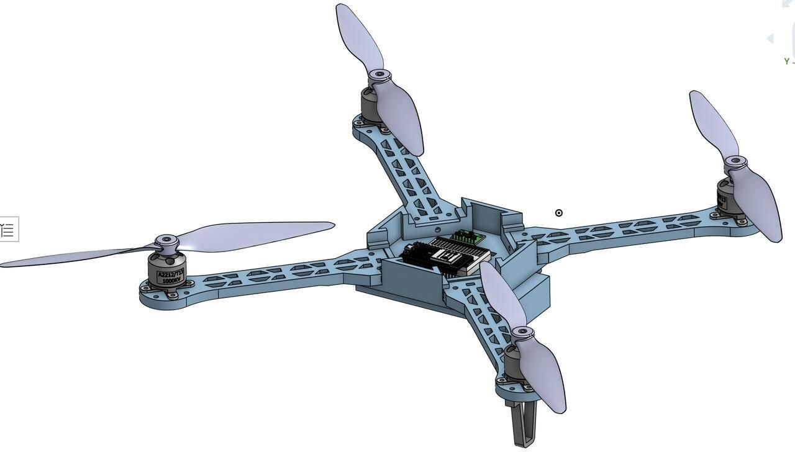

GitFit
2nd at HackRice!Real arm movement becomes input for browser-based fitness games, using an ESP32 and two wearable sensors.
ESP32 / Bluetooth LE / Three.js
Project notes+
Two MPU6050 sensors track the upper arm and forearm. ESP32 firmware streams motion over Bluetooth LE to a Three.js viewer, with two-pose calibration and practice controls for playing without hardware.
IN PROGRESS
6-DOF robotic arm
A 6-DOF robotic arm with a 10 lb payload and 35-inch reach, being developed for teleoperation and VLA policies.
Robotics / Teleoperation / Robot learning
Project notes+
I am building a six-degree-of-freedom robotic arm with a 10 lb payload and a 35-inch reach. The project combines mechanical design and hardware prototyping with ongoing work on teleoperation and learned robot control.
V.02
Robot dogs
Two robots designed, modeled, and programmed from scratch. The second adds wheeled locomotion.
Arduino / Raspberry Pi / Python
Project notes+
Version 1 uses an Arduino programmed in C. Version 2 uses a Raspberry Pi and Python, with powered wheels at the knees that let it switch to wheeled movement.
FTC robotics
Four years of FIRST Tech Challenge robotics (2021-2025) as mechanical lead, programmer, and co-president. Our team placed 8th in the Ochoa Division at the World Championship.
Competition robotics / 2021-2025
Project notes+
Custom ESP32 drone
A custom, 3D-printed drone. An exercise in orientation sensing, wireless control, and PID tuning.
ESP32 / MPU6050 / PID control
Project notes+
The drone uses ESP-NOW for wireless communication and an MPU6050 for orientation data. I developed C++ firmware, tuned PID control, and worked with BLDC motors and ESCs to connect sensor feedback with motor output.

Medicine bottle opener
A device designed to help people with arthritis or limited hand mobility open medicine bottles.
Assistive design / Prototyping
Project notes+
Developed as part of the PLTW Engineering Design & Development course, with a focus on a practical everyday accessibility challenge.
Beat Saber + arm tracking
A homemade rhythm game and wireless arm tracker, built to play without a VR headset.
Unity / C# / Arduino
Project notes+
I built a Beat Saber-inspired game in Unity using C#. An Arduino and potentiometers track arm movement; Bluetooth sends the movement data to Unity to control a virtual arm.
Puppeteering robot
A Transformers-inspired robot and Cybertruck project, exploring control through arm movement.
Motion control / Robotics
Project notes+
After watching Transformers, I wanted to build something I could control using the movement of my own arm. This project explores that idea through a puppeteering robot.